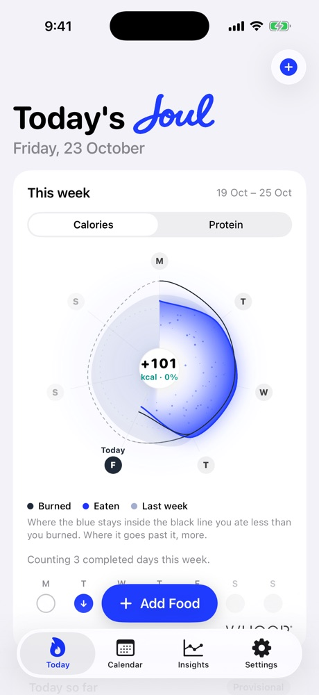

Your calories burned, pulled in automatically.
WHOOP already knows how much energy you spend. Joul reads it, so you only log what you eat. The result is one clear number for the day, and a weekly dial that shows where you stand.
Get early accessData by
